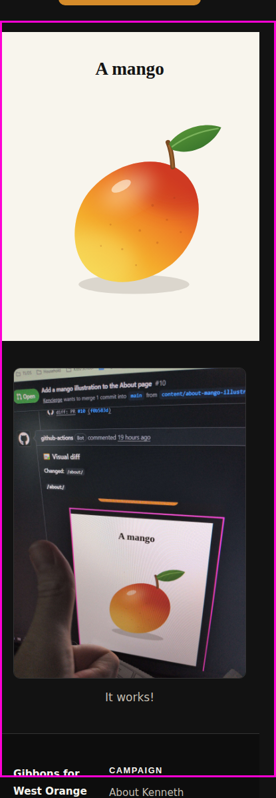
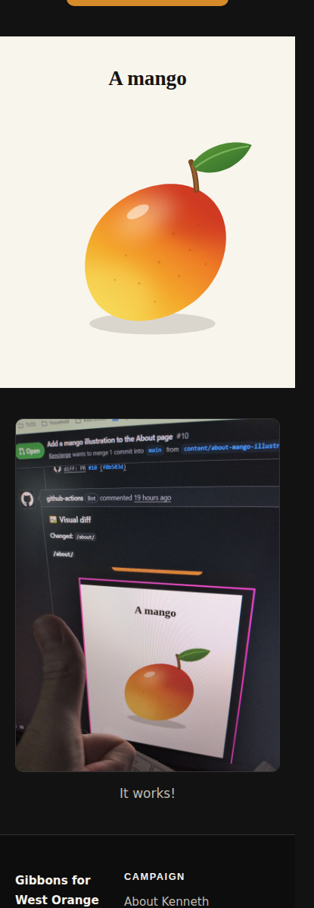
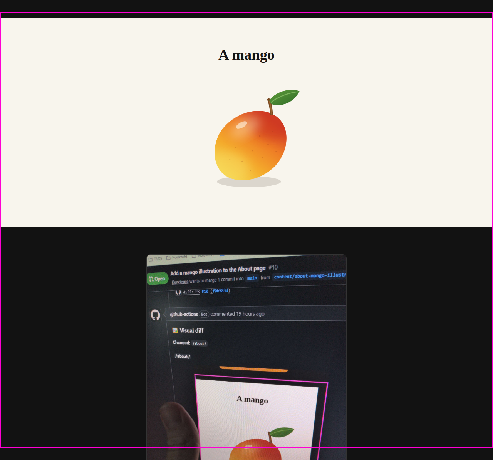
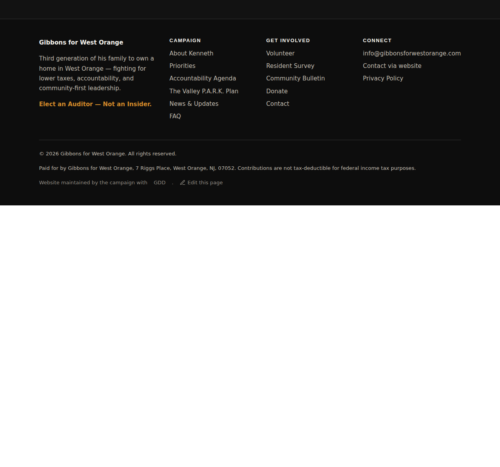

1 changed · 0 new · 0 removed · 20 routes compared.
The changed area runs taller than the outline shows — the ring marks where it starts. The pixel diff below is the whole page, so anything further down is in there.


The changed area runs taller than the outline shows — the ring marks where it starts. The pixel diff below is the whole page, so anything further down is in there.

